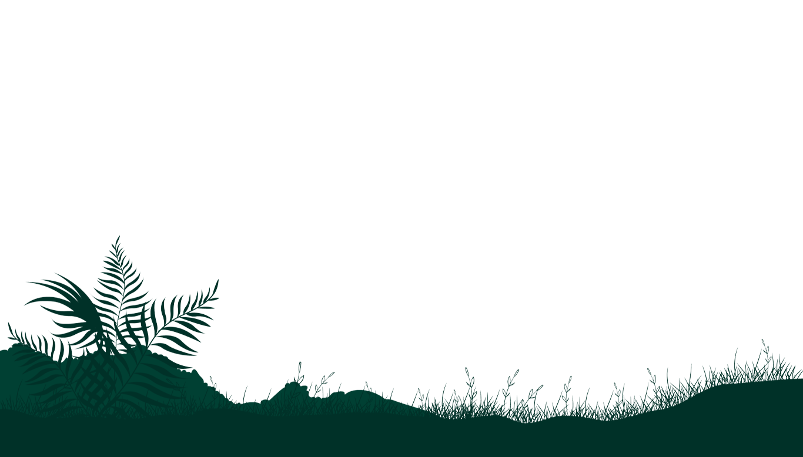

Realismo de The last of us
O realismo de the last of us é algo impressionante
Os gráficos de The Last of Us Part II são incrivelmente realistas e detalhados.
O jogo usa um mecanismo gráfico proprietário que permite gráficos incrivelmente realistas. Os personagens são incrivelmente detalhados, com expressões faciais e movimentos corporais realistas. Os ambientes são ricos e detalhados, desde as ruas destruídas de Seattle até as florestas exuberantes do Wyoming.
Aqui estão alguns exemplos específicos dos gráficos impressionantes do jogo:
- Os personagens têm poros, pelos e rugas visíveis.
- As roupas dos personagens são realistas e detalhadas, com tecidos que se movem e fluem naturalmente.
- Os ambientes são cheios de detalhes, desde a casca das árvores até as folhas caídas no chão.
- Os efeitos de iluminação são impressionantes, com luz natural e artificial que se reflete de forma realista nas superfícies.
- Os efeitos climáticos são realistas, com chuva e neve que afetam a aparência dos personagens e do ambiente.
Os gráficos de The Last of Us Part II são um testemunho do poder do hardware do PlayStation 4 e do talento artístico da Naughty Dog. Eles criam um mundo pós-apocalíptico incrivelmente imersivo e realista que ajuda a dar vida à história e aos personagens do jogo.